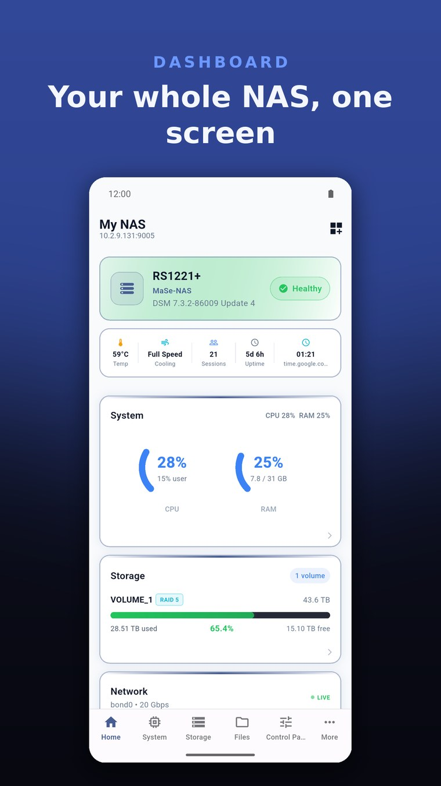
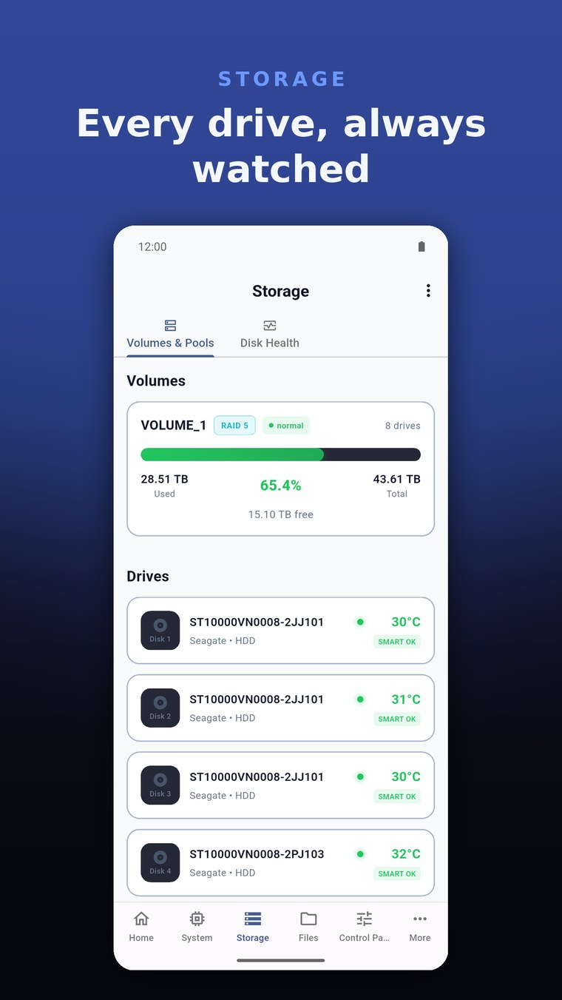
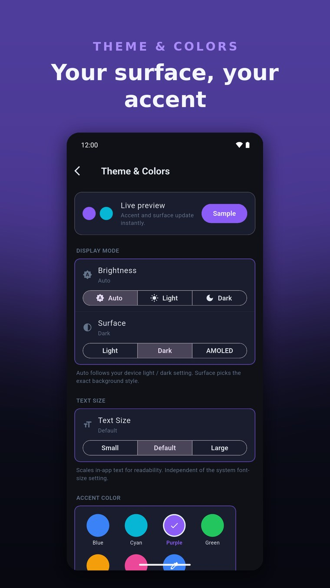

A powerful, independent mobile app for monitoring and managing your Synology NAS - real-time dashboards, Docker containers, surveillance cameras, storage health, and more. All from your pocket.



Syno Manager connects directly to your Synology DSM API to deliver real-time monitoring and management - no cloud middleman, no account required.
Live CPU, RAM, temperature, and uptime at a glance. Customizable cards let you see exactly what matters - system health, storage usage, network throughput, and more.
CPU RAM Temperature UptimeView all running containers with real-time CPU and memory usage. Start, stop, restart containers, and access logs - full Docker control from your phone.
Containers Logs Start/StopLive camera feeds in a clean grid layout. Tap to view full-screen, see recording status, and monitor all your Surveillance Station cameras in one place.
Live View ONVIF Recording StatusVolume usage, RAID status, individual drive temperatures, and SMART health data for every disk. Know the state of your storage at all times.
RAID SMART Drive TempsLive bandwidth graphs for every network interface. Track download/upload speeds, active connections, bonded interfaces, and DNS configuration.
Live Graphs Bonding ThroughputSee all installed DSM packages and their status. Monitor running services, scheduled tasks, UPS battery status, log entries, and shared folders.
Packages UPS LogsConfigure your dashboard categories, customize the navigation bar, choose your theme, and set polling intervals. Make the app work the way you want.
Themes Navigation CategoriesQuick Actions, Storage Overview, and System Status widgets for your home screen. Glance at your NAS health without even opening the app.
Quick Actions Storage System StatusA ground-up redesign built for clarity and speed. Real-time data, a customizable dashboard, and two-axis theming - now on iPhone, iPad, Android, Windows, and Mac.
Syno Manager communicates directly with your Synology NAS using the official DSM API. Your NAS data stays between your device and your NAS.
Enter your NAS IP address and port. Syno Manager supports local network connections and custom ports - connect to any accessible DSM instance.
Log in with your existing DSM credentials. The app uses the standard Synology authentication API - the same one DSM uses in your browser.
Get real-time data streamed directly from your NAS. CPU usage, Docker containers, camera feeds, storage health - all updated live at your chosen polling interval.
Syno Manager is designed with a privacy-first architecture. Minimal data collection, no user tracking, no cloud dependency.
Everything you need to know about Syno Manager.
Syno Manager runs on iPhone, iPad, Android, Windows, and Mac. Take control of your NAS today.